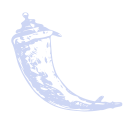
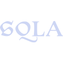

Projeto de parceria do [CBPF/Fiocruz/IBICT] para apoio no evento da Rede Brasileira de Repositórios Digitais. Conta com desenvolvimento front e back end para estilização, banco de dados, organização e designer, entrega de documentos.


Certificado